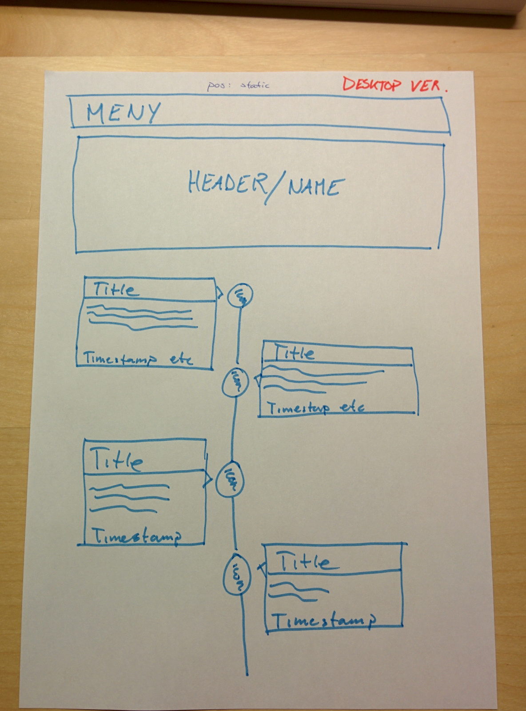
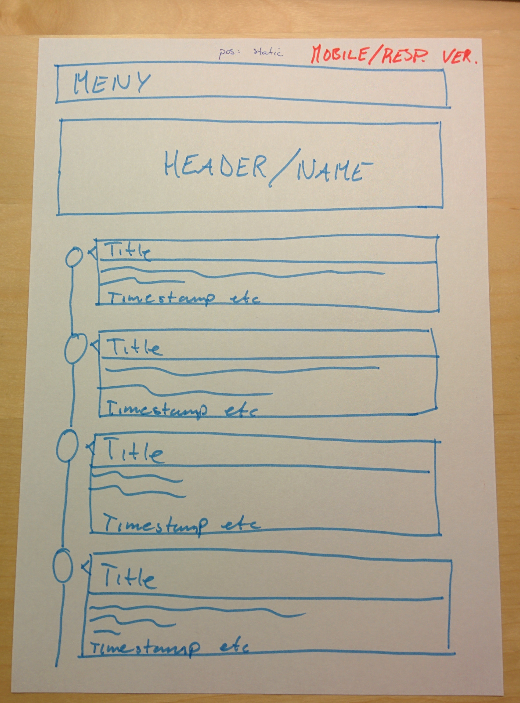
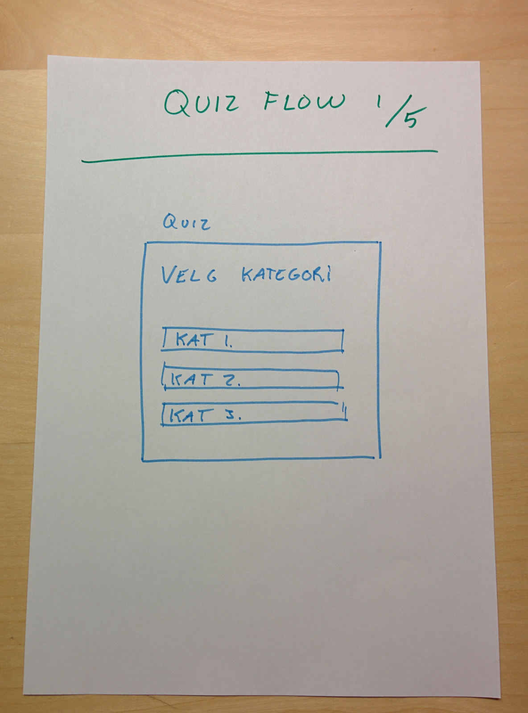
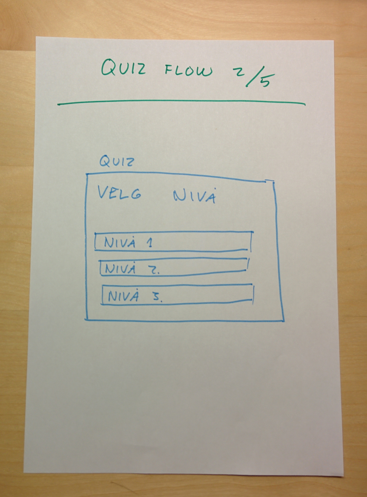
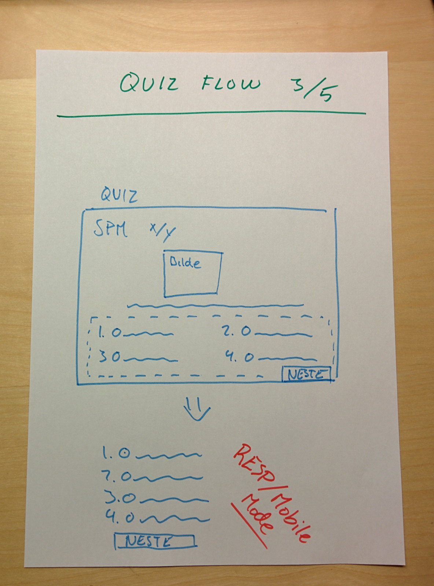
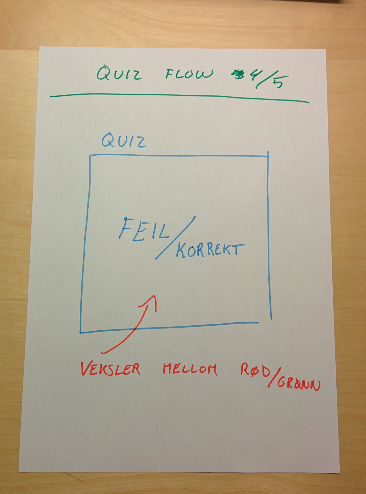
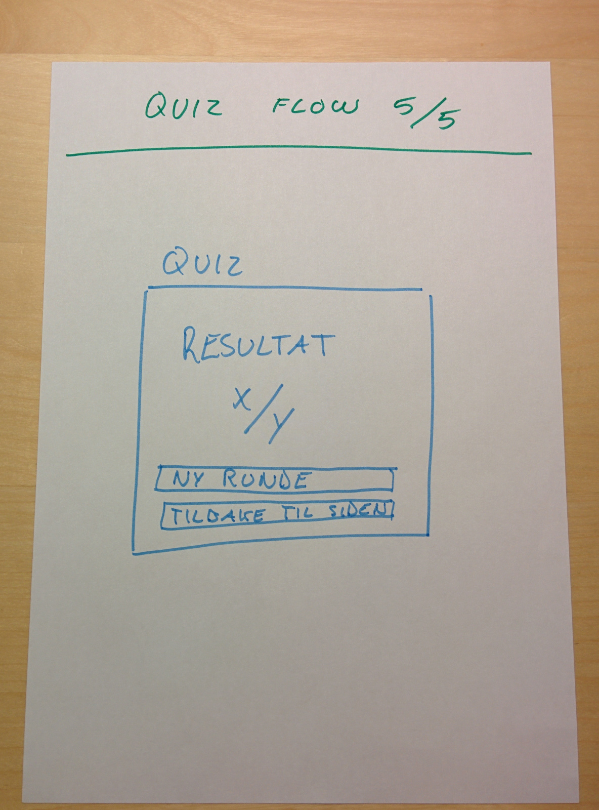

Nettstedet skal inneholde en vertikal timeline ( tenk Facebook sin timeline ). Denne skal ta brukeren med på en reise gjennom internettets historie. Vi har valgt å sette fokus på WWW. Samtidig skal nettstedet inneholde en artig teknologi-quiz.
 
    
| Prosjektleder: | Hans-Christian Nenseth |
| Rapportansvarlig: | Hans Petter Osvold |
| Artikkelansvarlig: | Torbjørn M. Brandrud |
| Backendansvarlig: | Marius Alexander Skjolden |
Nettstedets HTML og CSS struktur, med definisjoner for layout, skal kodes i fellesskap.
Vi har bestemt oss for å bruke mandager og onsdager til møter og felleskoding. Ved behov kan vi planlegge hjemmearbeid i tillegg til disse møtedagene.
Noe hjemmearbeid er allerede planlagt. Vi har for eksempel blitt enige om at hvert medlem av prosjektet skal skal bidra med noen forslag til milepælen “CSS farger og Finpuss”. Arbeidet med dette utføres utenfor de planlagte møtedagene og forslag lastes opp til Git.
| HTML & CSS struktur og definisjoner for layout: | ferdigstilles senest den 12. november. |
| Quiz ( teknisk + innhold): | ferdigstilles senest den 12. november. |
| CSS farger og finpuss: | ferdigstilles senest den 19. november. |
| Artikler: | ferdigstilles senest den 24. november. |
Testing utføres kontinuerlig, men ferdigstilles senest den 26. november. Rapport skriving utføres kontinuerlig, men ferdigstilles den siste uken.
Vi har bestemt oss for å bruke HTML5 og CSS3. Det er flere grunner til denne avgjørelsen. Samtidig finnes det argumenter mot bruk av disse teknologiene. Vi har veid fram og tilbake og endt på at vi vil at nettstedet skal være fremtidsrettet og da spesielt oppfylle slagordet “mobile first”. Nettsiden skal dermed være responsiv, og vi vil bruke CSS3 media queries for å oppnå dette responsive designet.
Det er flere argumenter for å bruke HTML5. For det første så har HTML5 siden 2012 vært anbefalt til å bli den nye bransjestandaren. HTML5 står for fremtiden. Samtidig så åpner HTML5 for en renere og mer ryddig kode med sin nye semantikk.
Når vi skal lage et moderne nettsted så kommer vi ikke unna å bruke JavaScript. Vi har planlagt å bruke JavaScript til å lage en quiz side. Denne siden vil ikke stå på egne bein, produktmessig, men vår hypotese er at om denne quizen blir intressant nok, så vil den øke brukernes oppfattede verdi av siden.
Som datastruktur for quizen har vi valgt å bruke JavaScript Object Notation ( JSON ). For å kunne gi brukeren en god opplevelse under quizen skal vi bruke AJAX for å manipulere formen til quizen.
Det at vi ikke kan bruke rammeverk, gjør at vi ser bort i fra typisk “JQuery” funksjonalitet som karuseller, overganger, etc. Ettersom det blir en stor oppgave å “finne opp hjulet på nytt” med i underkant av 4 uker arbeidstid.
Vi har vurdert å skrive en PHP & MySQL backend til siden, men ettersom dette ikke ligger i oppgaven, og at tidsrammen på dette prosjektet er nokså kort, ser vi på dette som uhensiktsmessig. Dermed har vi ikke tatt utgangspunkt i disse teknologiene.
Vi har valgt å etterstrebe smidig metode.
Vi har tatt en beslutning om å bruke Git. Dette gjør det lettere å dele kodebasen innad i teamet, og for å holde versjonskontroll.